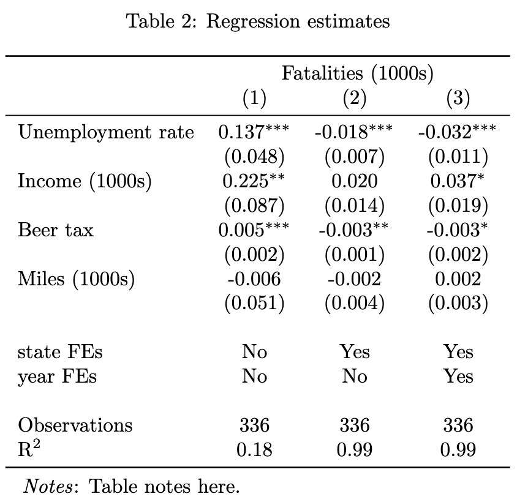
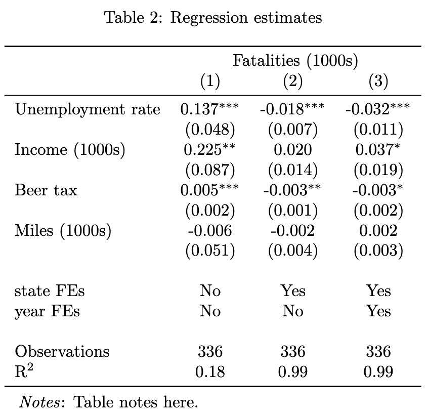

pacman::p_load(tidyverse, AER, modelsummary, kableExtra, fixest)
data("Fatalities")I haven’t been very good at updating the blog recently,1 but it feels like as good a time as any for an update on how to make basic but nice-looking LaTeX tables with relatively little coding effort. This post is an update to this post from 2021, which was itself an update to a post from 2019. I’ll leave the discussion of philosophies around table-making to the 2021 post and get right to the good stuff: we’re going to make these two tables.
 

If you don’t like the way those look, now is a good time to bail.
Setup
Load stuff
First, we gotta load some stuff. I’m going to use pacman for package management, the tidyverse for general data manipulation, AER for some data on automobile fatatalies, modelsummary for summary statistics, kableExtra for some extra table formatting, and the inimitable fixest for estimating regressions and making the regression tables.
Note
We owe these package authors a huge thank-you for making our lives easier. If you use them, don’t forget to cite them in your papers and buy them a beverage of their choice when you meet them in person!
(Mea culpa: I have not done a good job citing the many packages I use in my own work. I will do better.)
Rescale and relabel variables
Next we need to do some cleaning up. I find it’s useful to have my variables on similar scales for regressions and I want to make sure I’m describing those variables accurately, so before I do anythign I rescale and rename variable appropriately. This is also a good time to define a data dictionary here to clean up names in tables later.
## Rescale and label variables
data <- Fatalities %>%
transmute(state, year,
unemprate = unemp,
beertax = beertax * 100,
income1000s = income / 1000,
miles1000s = miles / 1000,
fatal1000s = fatal / 1000,
popm = pop / 1e6
)
var_dict <- c(
unemprate = "Unemployment rate",
beertax = "Beer tax",
income1000s = "Income (1000s)",
miles1000s = "Miles (1000s)",
fatal1000s = "Fatalities (1000s)",
popm = "Population (millions)"
)Descriptive statistics
We’re going to make a two-panel descriptive statistics table. The first panel will summarize the variable distributions, and the second will count the total and unique observations by group.
Summarize variable distributions
Now we can summarize the variable distributions, the standard approach for a summary statistics table in a paper. modelsummary::datasummary does most of the legwork here for us.
variable_distributions <- datasummary(All(data) ~ Mean + SD + Min + Median + Max,
fmt = fmt_significant(2),
output = "data.frame",
data = data
)
# Use the data dictionary to rename variables
variable_distributions <- variable_distributions %>%
mutate(` ` = var_dict[as.character(` `)])
variable_distributions Mean SD Min Median Max
1 Unemployment rate 7.3 2.5 2.4 7 18
2 Beer tax 51 48 4.3 35 272
3 Income (1000s) 14 2.3 9.5 14 22
4 Miles (1000s) 7.9 1.5 4.6 7.8 26
5 Fatalities (1000s) 0.93 0.93 0.079 0.7 5.5
6 Population (millions) 4.9 5.1 0.48 3.3 28Count total and unique observations by group
I also like to count the total observations and unique observations by group (often different sets of fixed effects) in the same table.
# Count total observations and unique observations by group
counts <- tribble(
~Name, ~Value,
"Observations", sprintf("%g", nrow(data)),
"States", sprintf("%g", n_distinct(data$state)),
"Years", sprintf("%g", n_distinct(data$year))
)
counts# A tibble: 3 × 2
Name Value
<chr> <chr>
1 Observations 336
2 States 48
3 Years 7 Turn into LaTeX
Now we can combine the two tables and save them as .tex files. This requires a tiny bit of hacking to jam the tables together. Note that save the output using the output = "latex_tabular" option to get only the tabular environment. This is useful because it lets me set captions and tables notes in the LaTeX document itself.
# To combine, align first names
names(counts)[1:ncol(counts)] <- names(variable_distributions)[1:ncol(counts)]
summary_stats <- bind_rows(variable_distributions, counts)
# Replace NAs with empty strings
summary_stats[is.na(summary_stats)] <- " "
datasummary_df(
summary_stats,
output = "latex_tabular"
) %>%
group_rows("Variables", start_row = 1, end_row = nrow(variable_distributions), bold = F, italic = T) %>%
group_rows("Counts", start_row = nrow(variable_distributions) + 1, end_row = nrow(summary_stats), bold = F, italic = T) %>%
write_lines("summary-stats.tex")Regression estimates
I’m a big fan of fixest for estimating regressions. It is extremely fast for models with lots of observations and fixed effects, and it includes a very nice set of functions for summarizing regression output. First we’ll estimate the models, then we’ll make the table.
Estimate regression models
My tables often use similar sets of control variables with different sets of fixed effects. Content note: this is a regression annual automobile fatalities on a few variables, including the unemployment rate, income, beer taxes, and miles driven. The causal inference economist in me is required to disclose that I don’t think we’re estimating true causal effects here, but it’s a nice example for a table. I use use etable at the end of this chunk for a quick view of the estimates.
fmla <- "fatal1000s ~ unemprate + income1000s + beertax + miles1000s"
models <- list()
models[["OLS"]] <- feols(as.formula(fmla), data = data)
models[["+ State FE"]] <- feols(as.formula(sprintf("%s | state", fmla)), data = data)
models[["+ Year FE"]] <- feols(as.formula(sprintf("%s | state + year", fmla)), data = data)
etable(models, cluster = ~state) OLS + State FE + Year FE
Dependent Var.: fatal1000s fatal1000s fatal1000s
Constant -3.401* (1.649)
unemprate 0.1371** (0.0483) -0.0179** (0.0066) -0.0322** (0.0105)
income1000s 0.2250* (0.0870) 0.0200 (0.0140) 0.0365. (0.0186)
beertax 0.0048** (0.0016) -0.0025* (0.0012) -0.0028. (0.0015)
miles1000s -0.0060 (0.0507) -0.0021 (0.0037) 0.0016 (0.0032)
Fixed-Effects: ----------------- ------------------ ------------------
state No Yes Yes
year No No Yes
_______________ _________________ __________________ __________________
S.E.: Clustered by: state by: state by: state
Observations 336 336 336
R2 0.17631 0.99245 0.99326
Within R2 -- 0.26298 0.25553
---
Signif. codes: 0 '***' 0.001 '**' 0.01 '*' 0.05 '.' 0.1 ' ' 1Turn into LaTeX
But etable is capable of much more. Below I set options appropriate for LaTeX output.
setFixest_dict(var_dict)
etable(models,
cluster = ~state,
drop = "Constant",
digits = "r2",
digits.stats = 2,
fitstat = c("n", "r2"),
style.tex = style.tex("aer",
fixef.suffix = " FEs",
fixef.where = "var",
yesNo = c("Yes", "No")
),
tex = T
) %>%
write_lines("regression-etable.tex")LaTeX document
That’s basically it. The last step is to plonk these into a LaTeX document (the output of which you saw above), copied below. It’s fairly simple, but I do use the threeparttable package to add notes to the tables.
\documentclass{article}
\usepackage{booktabs}
\usepackage{caption}
\usepackage[para]{threeparttable}
\usepackage{siunitx}
\begin{document}
\begin{table}
\centering
\begin{threeparttable}
\caption{Summary statistics}
\input{summary-stats}
\begin{tablenotes}
\item \emph{Notes}: Table notes here.
\end{tablenotes}
\end{threeparttable}
\end{table}
\begin{table}
\centering
\begin{threeparttable}
\caption{Regression estimates}
\input{regression-etable}
\begin{tablenotes}
\item \emph{Notes}: Table notes here.
\end{tablenotes}
\end{threeparttable}
\end{table}
\end{document}Footnotes
An understatement. I’ve been very bad at updating it.↩︎